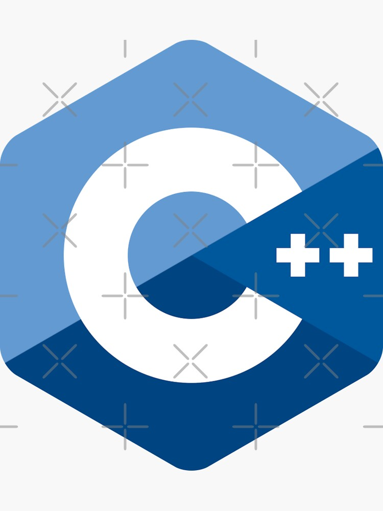

Universidad de Extremadura Data Management
Pagina de contenido normal
Hola, evento de programacion
Contenido Multimedia:
Normal.Tipo

Normal.Tipo
Normal.Tipo
Volver
Redes Sociales:
Tweets by infouex
-
Web
-
Twitter